10 STORYTELLING
© 2026
01 /
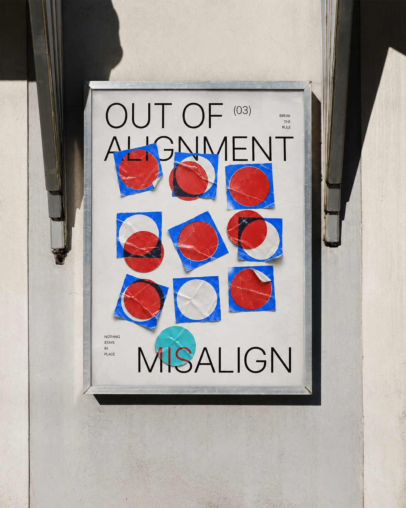
10 POSTERS
ABOUT
본 프로젝트는 하나의 틀에 갇히지 않고 새로운 가능성을 향해 나아가는 디자인의 태도를 탐구하는 데서 출발했습니다. 누구나 자신만의 기준과 규칙을 가지고 있지만, 때로는 익숙한 방식과 스스로 만들어낸 강박이 새로운 시도를 제한하기도 합니다.
이에 저는 기존의 틀뿐만 아니라 제 안에 자리 잡은 고정관념과 디자인적 습관을 깨는 것을 주제로 총 10개의 포스터를 제작했습니다.
OUT OF FRAME
PROCESS
정렬된 도형과 타이포그래피를 활용해 규칙과 질서가 무너지는 과정을 시각화하였습니다. 일정한 그리드 안에서 반복되던 요소들이 점차 어긋나며, 구겨진 종이의 질감을 통해 불완전함과 변화의 흔적을 드러냅니다. 이를 통해 정해진 틀에서 벗어나 새로운 형태와 가능성을 탐색하는 과정을 표현해보았습니다.
ALIGN.
ALIGN.
ALIGN.
ALIGN.
ALIGN.
ALIGN.

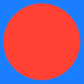
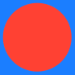


(01)
FOLLOW
THE
GRID
Everything
has
its
place
OUT OF
ALIGNMENT
MISALIGN
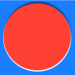
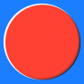
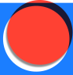
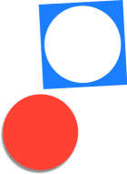
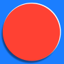
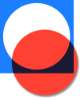
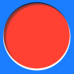
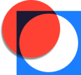
(02)
NOTHING
STAYS
IN
PLACE
BREAK
THE
RULE
PURE BEYOND
DEFINITION
‘PURE, 순수’라는 키워드를 중심으로 타인의 시선이나 기준에 규정되지 않은 본연의 모습을 표현하였습니다. 반투명한 천과 부드러운 빛, 인물의 움직임을 통해 순수함의 섬세한 감각을 시각화하고, 겹쳐지는 소재와 여백을 활용해 있는 그대로의 자신을 마주하는 순간을 담아냈습니다.
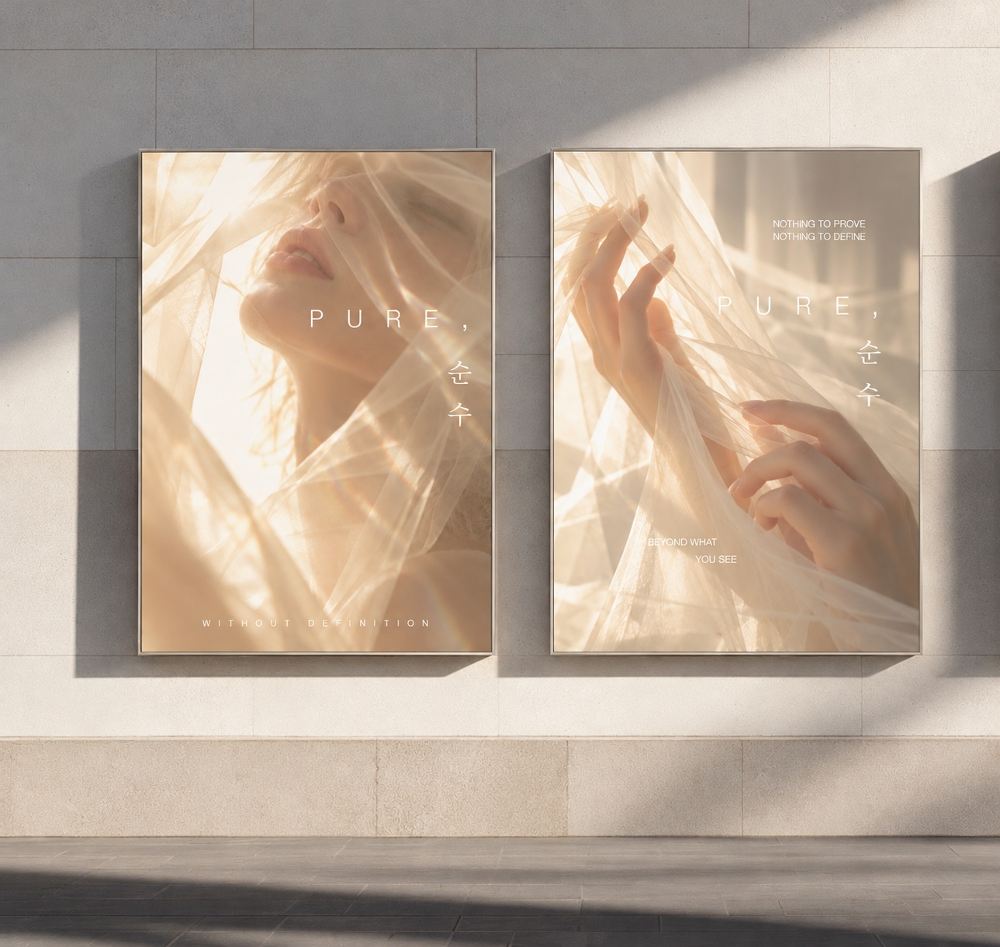
BEYOND MY
COLOR PALETTE
스스로 정해놓은 색의 틀에서 벗어나 새로운 시각적 가능성을 탐색한 작업입니다. 먼저 그레이 레이아웃을 통해 형태와 크기, 위치 등 기본적인 조형 구조를 설계한 뒤, AI를 활용해 기존의 색채 감각에서 벗어난 색상과 질감, 그래픽 요소를 적용해보았습니다. 절제된 무채색의 구조가 다채로운 시각 언어로 확장되는 과정을 통해 익숙한 표현 방식에 도전하고 새로운 디자인 가능성을 발견하고자 하였습니다.
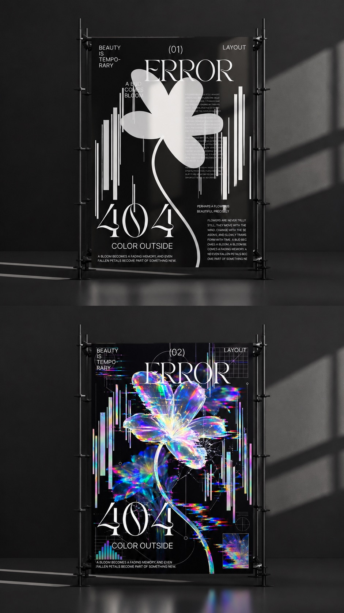
‘나를 정의하지 않는다’를 주제로 만든 포스터들
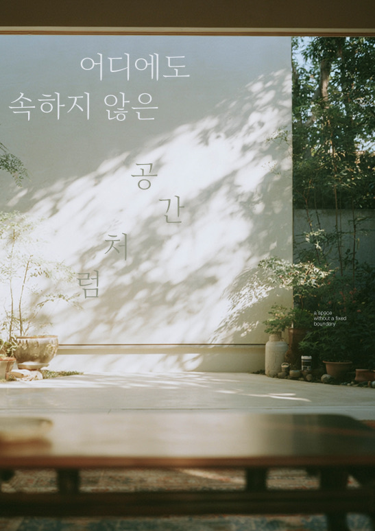
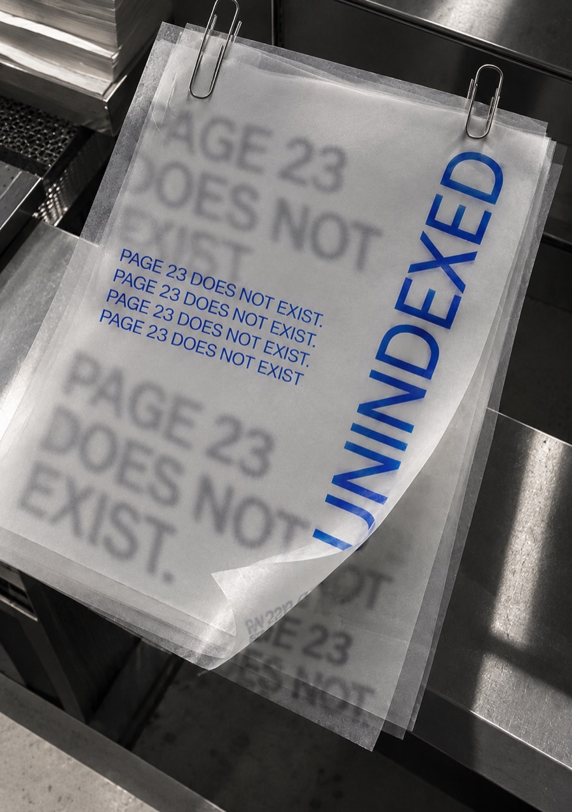
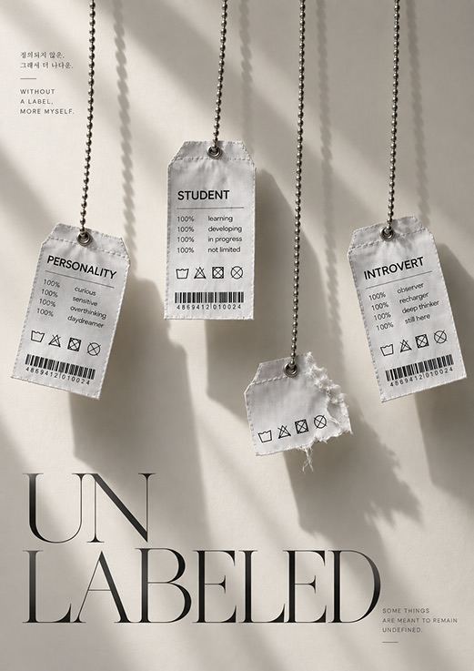
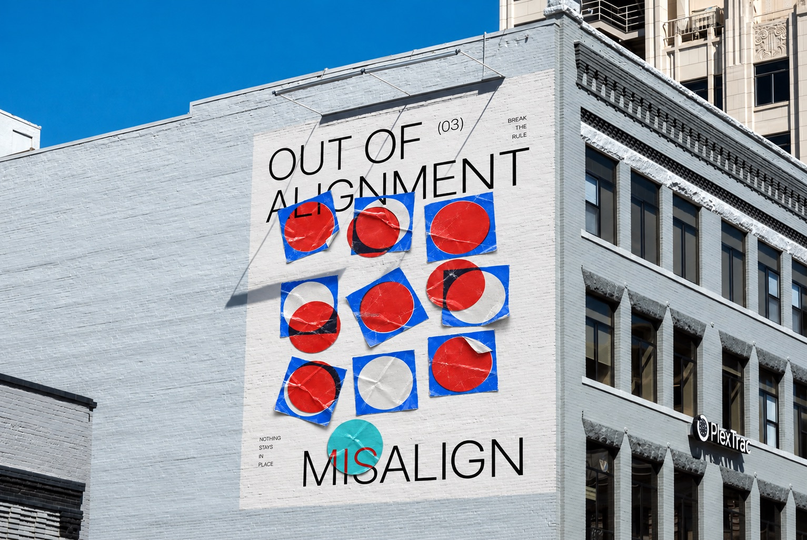
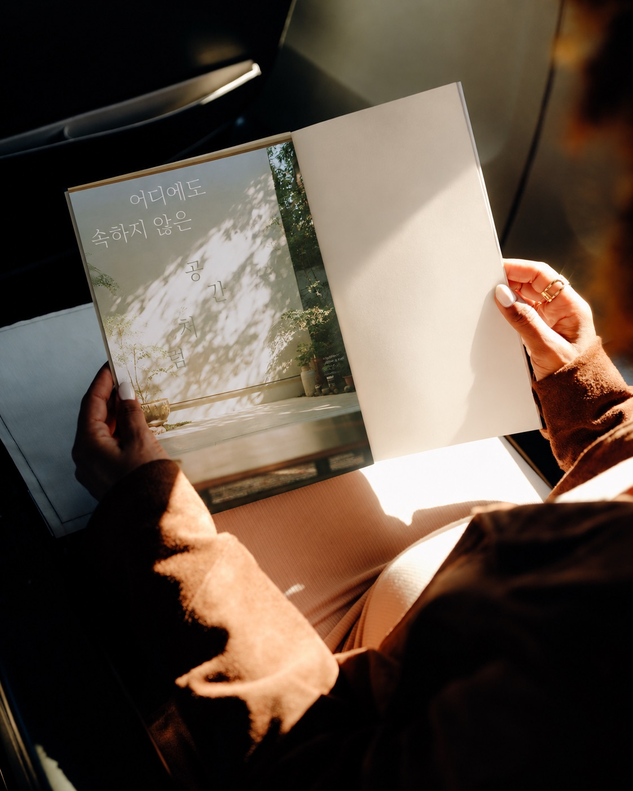
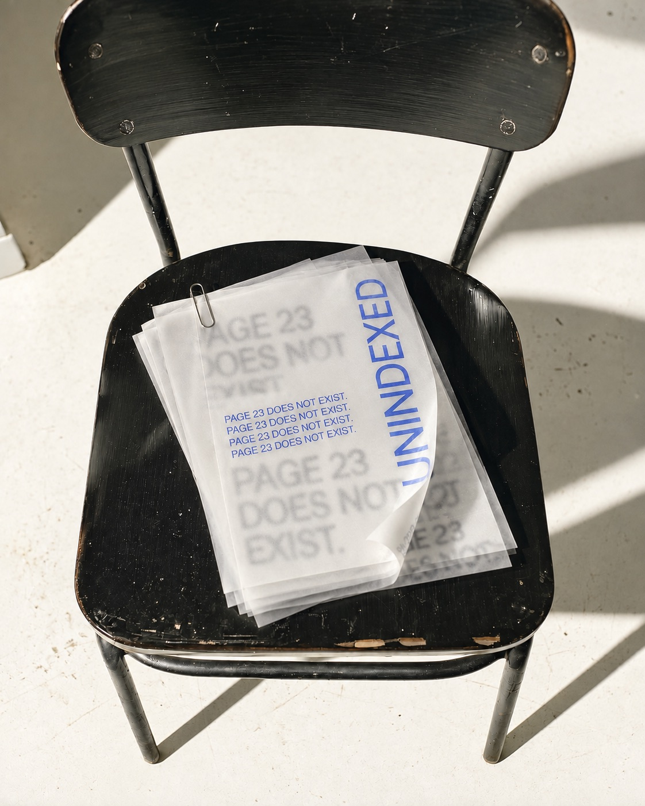
NEXT PROJECT DIPTYQUE : MEMORY